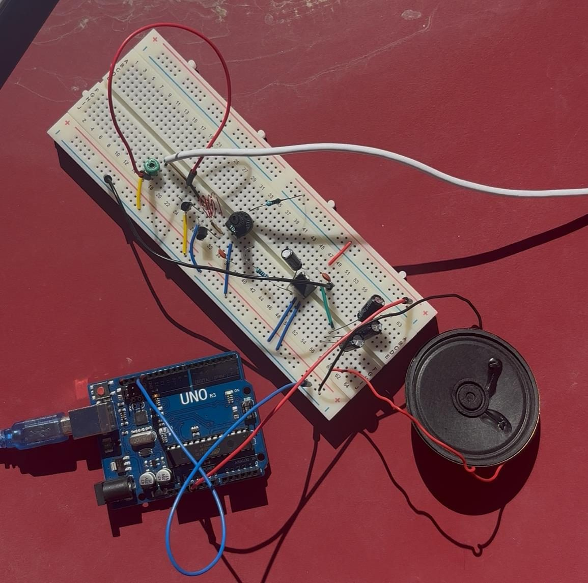
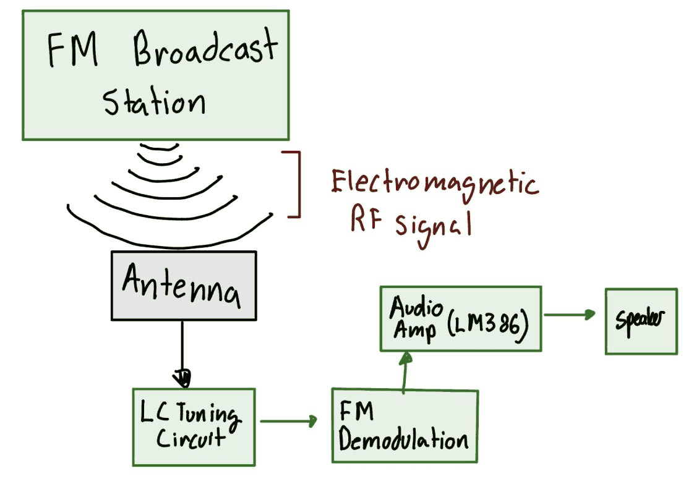
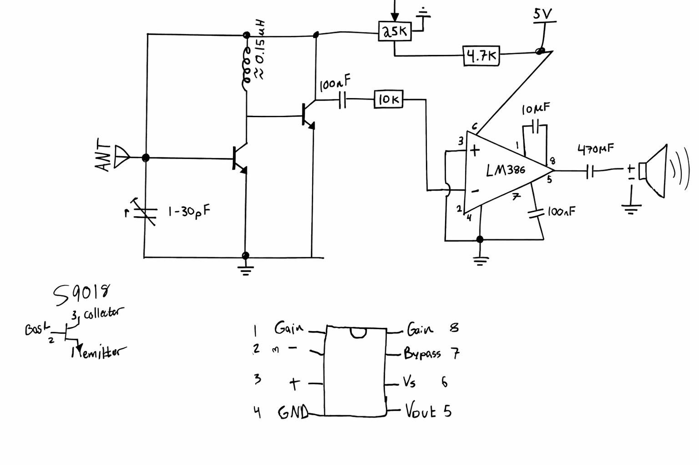

RF · Analog
FM Radio Receiver

- Band
- 88–108 MHz (FM broadcast)
- Tank inductor
- ≈ 0.15 µH — 28 AWG enamel, 3–4 turns, 5.3 mm dia, 3 mm long
- Tuning
- 1–30 pF variable capacitor
- RF stage
- Two transistors — S9018 specified, substitutes used
- Audio stage
- LM386 into a speaker via 470 µF
- Supply
- 5 V from an Arduino Uno
- Built for
- Principles of Communications coursework
What it is
An FM broadcast receiver built out of individual components — no receiver IC doing the hard part — put together for a Principles of Communications course. Antenna, LC tank, two transistor stages, an LM386, a speaker.
It received. Once assembled it pulled in one strong local station and held it. Almost everything else the design was supposed to do, it didn't, and that turned out to be the more useful half of the project.

Winding the coil
The front end is an LC tank, and at 100 MHz the inductor is a few tenths of a microhenry — far too small to buy off a shelf in any useful way. So it was wound by hand: 28 AWG enamelled copper wrapped three to four turns around a drill bit, giving a coil about 5.3 mm across and 3 mm long, ends sanded back to break through the enamel. That geometry lands at roughly 0.15 µH.
Paired with a 1–30 pF variable capacitor, that should sweep the tank across the whole 88–108 MHz band, and the tuning knob should therefore select stations.
What actually happened
Three things went wrong, and they are worth being specific about.
- The variable capacitor did nothing. Sweeping it end to end produced no change in what was received.
- Changing the number of turns on the coil was negligible. Rewinding it — the other half of setting the resonant frequency — barely moved the result either.
- There was significant noise, and antenna position mattered far more than any control on the board.
Taken together those point at one conclusion: the tank was not what was setting the tuning. If deliberately changing both L and C doesn't move the resonant frequency, then stray capacitance and lead inductance elsewhere in the circuit are swamping the components that were supposed to be in charge. On a solderless breadboard that is entirely plausible — the contact strips run a few picofarads to their neighbours, which is a large fraction of a 1–30 pF tuning range, and the jumper leads add inductance comparable to the coil.
The two transistors are the other suspect. The S9018 was specified for its gain-bandwidth at VHF; the parts actually available were substitutes, and a transistor that runs out of gain before 100 MHz turns a tuned receiver into something that only responds to whatever signal is strongest.

What a version two would change
Solder it. Almost every failure above traces back to building a VHF circuit on a breadboard, and the fix is to stop doing that — a soldered board with short leads and a ground plane removes most of the parasitics that were overwhelming the tank. Get the specified transistors rather than substitutes, and the RF stage has the bandwidth the design assumed. Beyond that, a dedicated demodulator IC would recover audio far more cleanly than two discrete stages doing it approximately.
None of that makes the build a failure. It received a station on a breadboard out of loose parts, and the reasons it didn't do more are legible — which is the part worth keeping.